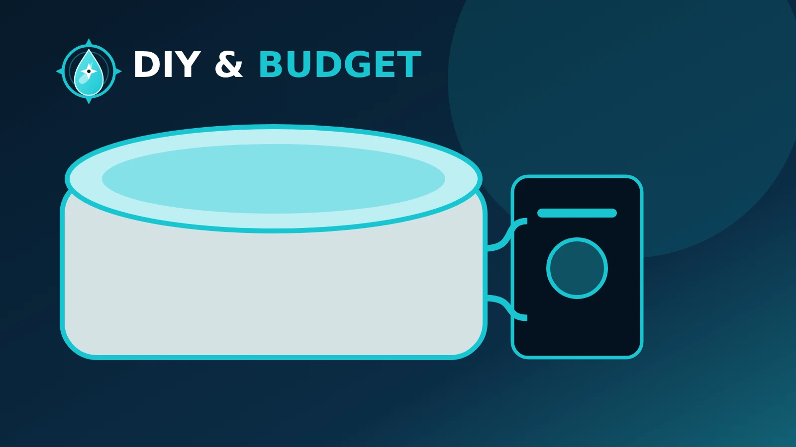

DIY Cold Plunge & Budget Ice Bath Solutions
There are really only three ways to get into cold water at home. You can fill something with water and buy ice. You can build a filtered, chilled setup out of separate parts. Or you can buy a finished system and plug it in. Everything else is a variation on one of those three.
This page is the decision, not the shopping list. Pick the path that matches how much effort you're willing to spend versus how much money, then follow it through to the detailed guide underneath. If you already know you want the cheapest possible start, our nine DIY ice bath ideas go straight to the specific builds.
Build It or Buy It?
Three paths, compared on the seven things that actually decide which one you'll still be using in six months.
Start cheap with ice
For finding out whether you'll actually keep doing this.
- Up-front cost
- Lowest
- Ongoing effort
- High — you buy and haul the ice
- Temperature control
- None
- Maintenance
- Drain and refill by hand
- Portability
- High for inflatables and totes
- Upgrade path
- Add a chiller to the same tub later
- Main limitation
- Temperature varies session to session
Build a filtered chiller setup
For frequent plungers who want a fixed temperature without paying for a finished system.
- Up-front cost
- Middle
- Ongoing effort
- High to build, low to run
- Temperature control
- Yes — set on the chiller
- Maintenance
- Filter, pump and water care
- Portability
- Low once it's plumbed in
- Upgrade path
- Replace parts individually
- Main risk
- Mains electricity next to water
Buy a complete system
For people who want it to work without becoming a project.
- Up-front cost
- Highest
- Ongoing effort
- Lowest
- Temperature control
- Yes — built in
- Maintenance
- Follow the manufacturer's schedule
- Portability
- Low — heavy, usually a fixed spot
- Upgrade path
- None — you buy the tier you want
- Main limitation
- Cost, lead times, and warranty terms vary
How to read this box. Up-front cost is shown as a category, not a figure, because the real number depends on which tub, which chiller and which retailer you choose — and on whether you buy new or second-hand. Every other row is a description of the trade-off, not a measurement: PlungeWise does not physically test these setups, and we have not run controlled ice-melt or running-cost tests. To put your own numbers on any of this, use the cost calculator.
Path A — Ice-Based Starter
The ice route is the honest starting point for almost everyone. Cold water is cold water: the physiological hit at 50°F doesn't care whether the cold came from a chiller or from a bag of ice. What you're giving up is convenience and consistency, and what you're buying in return is the ability to quit cheaply if the habit doesn't stick.
Four containers cover nearly all of the ice-based builds people actually use:
Inflatable barrel tub Budget
Purpose-made for this, packs away when you're not using it, and needs no tools. Manufacturers describe the walls as insulated and usually include a lid; we have not measured how that compares with a bare container in practice. The easiest way to try cold plunging without committing to anything.
Pros
- No build, no tools
- Stores away flat
- Lid usually included
Cons
- Shorter service life than metal
- Insulation performance not measured by PlungeWise
Galvanized stock tank Budget
A livestock watering trough: cheap for the volume, built to live outdoors permanently, and the option we'd pick if you already know you'll keep going. It is single-wall galvanized steel with no insulation layer, so expect ice to melt faster than in an insulated tub — we have not measured by how much. A foam lid is the standard fix, and it's the easiest of the four to add a chiller to later.
Pros
- Cheapest full-size volume
- Built for year-round outdoor use
- Cleanest upgrade path to Path B
Cons
- Uninsulated — expect heavy ice use
- Looks like a farm trough
A bathtub you already have Often free
If there's a bathtub in the house, you own a cold plunge already. Fill it cold, add ice, get in. Outdoors, a salvaged freestanding tub makes a genuinely nice garden plunge — the awkward parts are moving it and planning where the water drains. Nothing to buy makes this the cheapest honest test of whether you like cold water at all.
Pros
- Costs nothing if you already have one
- Comfortable, familiar shape
- Drainage already solved indoors
Cons
- Ties up the bathroom
- Heavy and awkward to relocate outdoors
Tote, bin or other temporary container Budget
A heavy-duty storage tote or a rigid kiddie pool is the cheapest tub-shaped thing you can buy. Water weighs roughly 8.3 lbs per gallon, so thin walls bow or split when the container is full — buy a rugged one, don't overfill it, and treat this as a few-weeks experiment rather than a setup you keep. Check the internal dimensions against your own height before ordering; most totes are shorter than people expect.
Pros
- Cheapest thing that holds enough water
- Light and easy to empty
Cons
- Thin walls can flex or crack
- Usually too small to get your shoulders under
What Path A actually costs to run
The purchase is the small number here. The ongoing cost is ice, and it scales directly with how often you plunge, how warm your climate is, how big the container is, and whether you insulate it and use a lid. That is four variables we can't guess for you, which is exactly why we built a calculator instead of publishing an average.
Work out your own ice cost in the calculator →
Path B — DIY With a Chiller
A DIY chiller build is a tub plus a loop: water leaves the tub, passes through a filter and a chiller, and comes back cold. Done properly it gives you the thing ice can't — the same temperature every single session, with no shopping trip beforehand. Done carelessly it puts mains electricity next to a container of water you're about to climb into.
Here is what a build is made of. We link to component categories, not to a specific parts list, because the right size of each part depends on your tub volume and your climate.
-
1. The tub
Anything rigid and watertight that you can fit two ports into. A galvanized stock tank is the usual base because it's cheap, deep enough, and doesn't mind living outside. Insulating the outside matters more here than in Path A: the less heat leaks in, the less the chiller has to run.
Browse stock tanks on Amazon → -
2. The chiller
The expensive part and the one that decides whether the build is worth it. Chillers are rated by cooling capacity, and the capacity you need goes up with tub volume, target temperature and ambient heat. Undersize it and it runs constantly without ever reaching the temperature you set. Aquarium and hydroponics chillers are the categories most home builds draw from.
Browse water chillers on Amazon → -
3. The pump
Moves water through the loop. Match its flow rate to what the chiller manufacturer specifies — too little flow and the chiller can't shed heat properly, too much and you lose efficiency across the loop. A submersible or external pond pump is the usual choice.
Browse circulation pumps on Amazon → -
4. Filtration
This is what separates a chiller build from a barrel of cold water you never change. A cartridge or canister filter catches skin, hair and debris so the water stays usable for weeks instead of days. Filtration alone is not sanitation — cold water slows microbial growth but does not stop it, so plan on a water-care routine and periodic full drains regardless.
Browse filtration systems on Amazon → -
5. Hoses and fittings
The part people underestimate. Every connection is a potential leak, and the diameter has to match the ports on the chiller, the pump and the tub — mixed sizes mean adapters, and adapters mean more joints. Buy hose rated for the temperature and pressure you're running, use proper clamps, and test the loop with water before you trust it unattended.
Browse hoses and fittings on Amazon → -
6. Drainage
Decide where several hundred gallons go before you fill the tub the first time, not after. A bulkhead fitting and a ball valve at the bottom turn draining from a bucket job into opening a tap. Whatever you choose, the water has to run somewhere that won't undermine a foundation, flood a neighbour, or breach local rules on discharging treated water — check what applies where you live.
-
7. Electrical safety — where this guide stops
PlungeWise does not publish wiring instructions, and you should be sceptical of any DIY cold plunge guide that does. What we will say is the boundary: every powered component must run from a GFCI-protected outlet, appliances and cords must be kept out of any position where they could fall into or sit in water, outdoor equipment needs enclosures rated for outdoor use, and extension cords are not a substitute for a proper outlet. If a build requires a new circuit, any modification to your home's wiring, or anything you would have to guess at — hire a licensed electrician. This is the one part of the project where being wrong is not recoverable.
A note on chest-freezer conversions
The most-shared DIY chiller build on the internet is a converted chest freezer, and it is the one we're least comfortable recommending. It solves the cooling problem elegantly and creates an electrical one: an appliance that was never designed to be filled with water, sealed by hand, sitting outdoors, with a person climbing into it. It can also void the appliance warranty and grow mould in seams you can't reach. We cover it in the DIY ideas guide for completeness, and we have not built or measured one. If you're drawn to it mainly because the finished systems are expensive, compare it honestly against Path A with a lid — you may find the gap is smaller than it looks.
Path C — Ready-Made System
At some point the DIY saving stops being a saving. If your evenings are worth more to you than the price difference, or you don't want a project living in your garden, a finished system is a legitimate answer rather than a cop-out. What the money buys is not colder water — it's the three things a DIY build makes you supply yourself.
What you're actually paying for
Less maintenance. Filtration, circulation, sanitation and temperature control arrive as one system that the manufacturer has already made work together. You follow a maintenance schedule instead of designing one.
A warranty and someone to call. When a DIY pump fails, you diagnose it. When a manufacturer's chiller fails inside its warranty period, that's their problem. Warranty length and what it actually covers vary a lot between brands, so read the terms before you assume — we list what each manufacturer publishes rather than summarising it into a score.
An integrated system. No mismatched fittings, no undersized chiller, no loop you have to test for leaks. It also usually looks like furniture rather than farm equipment, which matters more than people admit when the thing has to live on a patio.
Pros
- Works out of the box; nothing to size or match
- Manufacturer warranty and support
- Consistent temperature with no daily effort
Cons
- Highest up-front cost by a wide margin
- Lead times can run to weeks
- Heavy — plan the location before it arrives
If you're not sure which finished system fits your space, budget and routine, the finder narrows it down from four questions rather than making you read every comparison: find my cold plunge →. If the up-front number is the sticking point, our budget picks cover the cheapest ready-made options we'd actually suggest.
So which path should you take?
If you have never done this before, start with Path A, and start with whatever container you can get this week. The failure mode we see most often isn't buying the wrong tub — it's spending a lot on a system before finding out that cold water at 6am is not something you enjoy. Path A costs little enough that quitting is cheap.
If you already plunge regularly and the ice run is the thing making you skip sessions, Path B is the natural next step, and a stock tank you already own makes it a cheaper one. Go in knowing it is a real project with real electrical responsibilities, not a weekend of shopping.
If you know yourself well enough to know you won't maintain a build, Path C is not the lazy option — it's the one you'll still be using in a year. That's an editorial judgement about the trade-offs, not the output of a test we ran. We do not physically test these products; see how we review.